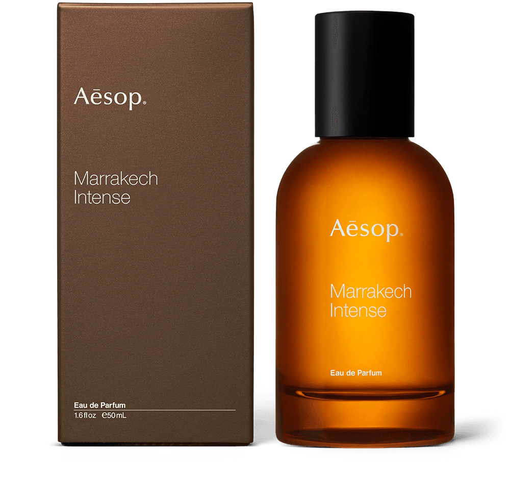

홈 > 향수
아로마 유형별 추천
- 플로럴
- 프레쉬
- 우디
- 오퓰런트
가볍고 프레쉬한 노트에서 깊이 있고 강렬한 노트에 이르기까지
플로럴 향수에 대한 우리의 접근은 자스민, 로즈, 일랑일랑에 우디와 따뜻한 스파이스를 가미하여 폭넓습니다.
그린, 상큼한, 깔끔한
허브, 시트러스 류 과일, 바다를 연상시키는 프레쉬 향수에 제라늄 리프, 유자, 베르가못을 즐겨 사용합니다.
스모키하고 드라이한 노트에서 따뜻한 흙내음에 이르기까지
우디 향수는 토바코, 머스크, 이끼 내음을 풍기며 베티버, 시더 아틀라스, 샌달우드가 즐겨 사용됩니다.
풍부하고 관능적인
미르, 파촐리, 프랑킨센스 성분 등을 바탕으로 한 오퓰런트 향수는 세련된 플로럴 향과 발사믹, 유향 노트가 두드러집니다.
향수 가이드
사용법
손목이나 목처럼 맥박이 뛰는 신체 부위에 사용할 것을 추천합니다.
해당 부위의 체열이 향기를 확산하는 데 도움을 줄 수 있기 때문입니다.
탑 노트
향수의 첫 인상을 결정하는 향을 탑 노트 또는 오프닝 노트라고 합니다.
향수를 뿌리고 처음 맡아지는 아로마로 휘발성의 작은 분자로 구성됩니다.
대개 10~30분 후에는 희미해지며 금방 사라집니다.
하트 노트
미들 노트라고도 불리는 하트 노트는 향수의 가장 핵심이 되는 향 입니다.
일반적으로 탑 노트에 비해 복잡하며 오래 지속됩니다.
하지만 베이스 노트에 비해 길게 지속되지는 않습니다.
베이스 노트
하트 노트가 사라진 후 완전하게 발향하는 아로마가 베이스 노트 입니다.
향수에서 가장 무겁거나 극적인 요소로 피부에서 가장 오래 지속됩니다.
그렇기 때문에 기억을 불러일으키는 역할을 하며,
피부와 일으키는 반응에 따라 그 향수로 개인이 풍기는 향이 결정됩니다.
베스트제품
-

카르스트 오 드 퍼퓸
-

휠 오 드 퍼퓸
-

마라케시 오 드 퍼퓸
카르스트 오 드 퍼퓸
무디하면서 상쾌한 향수로, 미네랄의 탑 노트와 폭풍우의 메탈릭한 베이스 노트가 어우러져 절벽에서 자란 식물과 해안을 연상시킵니다.
추천 대상
모든 성별, 실용주의자, 탐사자, 실존주의자
휠 오 드 퍼퓸
남다른 느낌을 자아내는 매혹적인 향수. 히노키 숲을 연상시키며 스모키 노트를 시작으로 은은한 스파이스와 짙은 그린, 흙내음이 조화롭게 어우러집니다.
추천 대상
모든 성별, 자유 사상가, 엉뚱한 사람, 방랑자